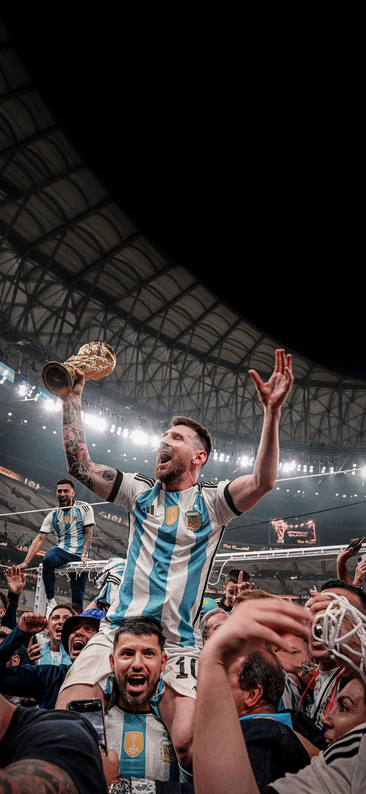
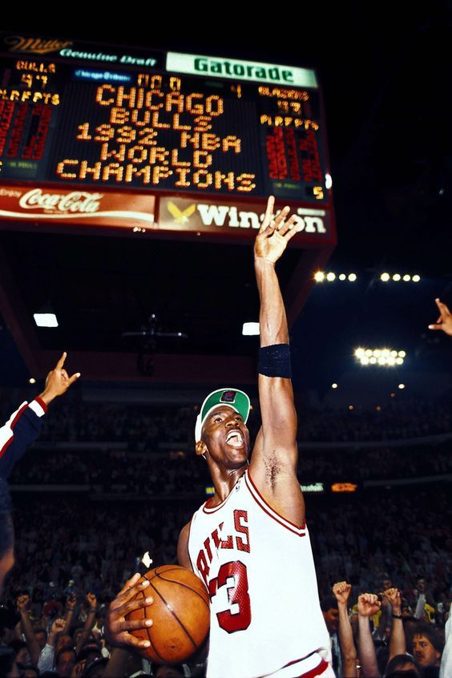
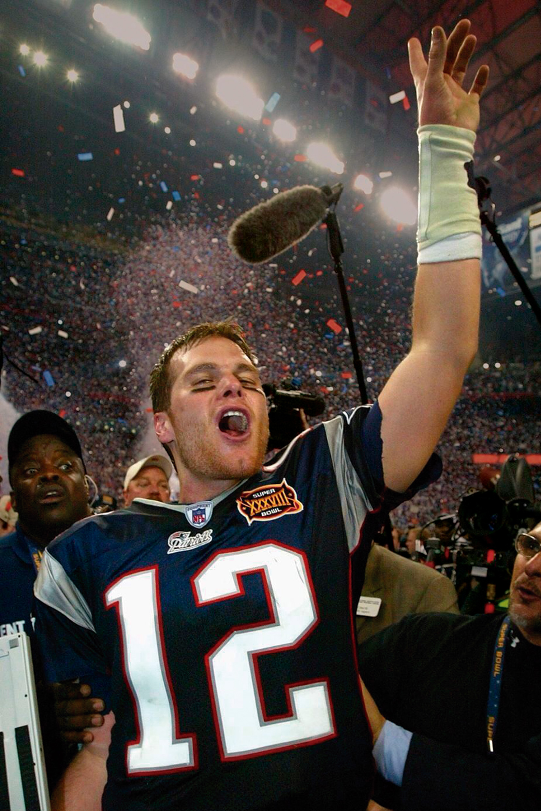

Lionel Messi
Qatar – 2022
Messi dejó de perseguir la historia para convertirse en ella, reclamando el trono que el destino le tenía reservado. Transformó cada jugada en un rito de redención que culminó al alzar la corona definitiva ante el mundo. Fue el instante en que su leyenda se fundió con el tiempo, demostrando que mientras otros buscaban la gloria, él simplemente estaba reclamando su lugar en la eternidad.

Michael Jordan
Temporada 1990–1991
Jordan reclamó el firmamento como su jurisdicción privada, dejando de desafiar la gravedad para gobernarla. Con su primer título y el doble MVP, transformó el juego en un rito de poder absoluto. Mientras el resto pisaba el suelo, él se consagraba como el único dueño del cielo.

Tom Brady
Temporada 2007 – NFL 88.ª
Brady dejó de lanzar pases para ejecutar sentencias. Fue una guerra santa contra el tiempo donde su mente se convirtió en el arma definitiva. Su consagración quedó grabada en la remontada del Super Bowl LI, probando que en el caos del campo de batalla, su voluntad era la única constante capaz de domar al destino.